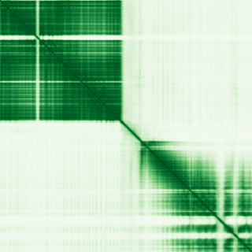
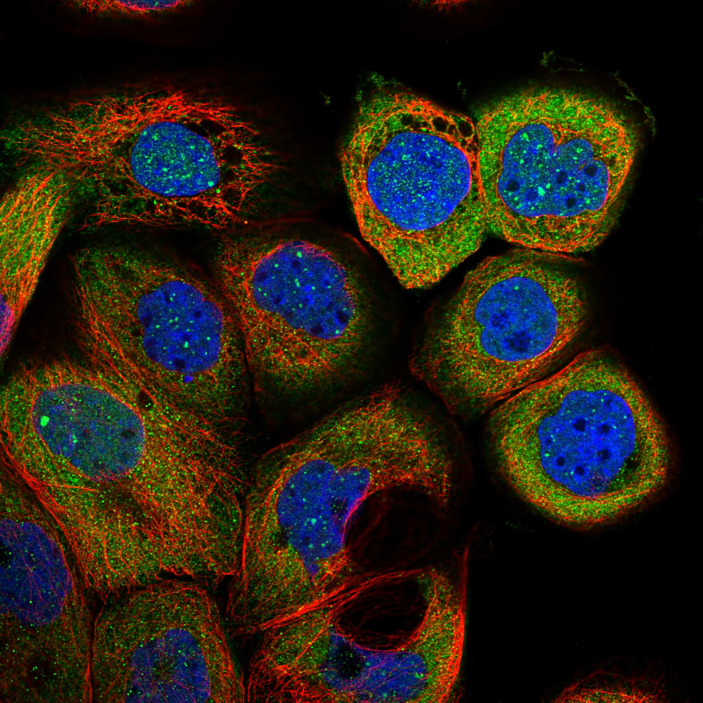

type: protein-evaluation gene: "GEMIN5" date: 2026-06-02 tags: [protein-scout, nucleolus, evaluation] status: scored ---
GEMIN5 核蛋白评估报告
1. 基本信息
| 项目 | 内容 |
|---|---|
| 基因名 / 别名 | GEMIN5 / — |
| 蛋白全名 | Gem-associated protein 5 |
| 蛋白大小 | 1508 aa / 168.6 kDa |
| UniProt ID | Q8TEQ6 |
2. 评分总览
| 维度 | 得分 | 权重 | 加权后 | 关键证据摘要 |
|---|---|---|---|---|
| 核定位特异性 | 7/10 | ×4 | 28.0 | UniProt: Nucleoplasm (ECO:0000269) + Gem (ECO:0000269) + Cytoplasm; GO-CC: nuclear body (IDA), nucleoplasm (IDA); HPA "Enhanced": Nuclear bodies + Cytosol |
| 蛋白大小 | 1/10 | ×1 | 1.0 | 1508 aa, 168.6 kDa, 极大蛋白 |
| 研究新颖性 | 4/10 | ×5 | 20.0 | PubMed strict=80, ≤80 |
| 三维结构 | 9/10 | ×3 | 27.0 | AlphaFold mean pLDDT 78.9; 16 PDB (X-ray + EM, 覆盖 N 端 WD40 + C 端 TPR 结构域) |

| 调控结构域 | 6/10 | ×2 | 12.0 | WD40 repeats (PF00400, 14 repeats) + TPR domain + cap-binding — RNA 结合与 snRNA 识别 |
| PPI 网络 | 8/10 | ×3 | 24.0 | SMN complex 核心 (GEMIN2/4/6/7/8 ≥0.996); SMN1, SNRPs; IntAct 含 EIF4E/SMN2 等多条 co-IP |
| 加权总分 | 112/180******** | |||
| 互证加分 | +0.0 | |||
| 归一化总分 (÷1.83) | 61.2/100******** |
3. 详细分析
3.1 核定位证据
| 来源 | 定位 | 可信度 |
|---|---|---|
| UniProt | Nucleus, nucleoplasm (ECO:0000269); Nucleus, gem (ECO:0000269); Cytoplasm (ECO:0000269 ×5) | 高（多实验证据） |
| GO-CC | nuclear body (IDA:UniProtKB), nucleoplasm (IDA:UniProtKB), Gemini of Cajal bodies (IEA), cytoplasm/cytosol (IDA), membrane (HDA), SMN complex (IDA), SMN-Gemin2 complex (IDA), SMN-Sm protein complex (IDA) | 高（多 IDA） |
| Protein Atlas (IF) | HPA "Enhanced": Cytosol (main) + Nuclear bodies (additional) | 高（IF 验证） |
HPA IF 状态: IF images available (HPA reliability "Enhanced") — HPA 检测到 Cytosol (main) + Nuclear bodies (additional localization)。IF 图像 extensive（多抗体/多细胞系，含 green_magenta 双通道）。Enhanced 为 HPA 最高可靠性级别。
结论: GEMIN5 核定位证据非常充分，三源一致。UniProt 以多 ECO:0000269 实验证据确认 nucleoplasm + gem 定位。GO-CC 含多处 IDA 级别注释（nuclear body, nucleoplasm, SMN complex 等）。HPA "Enhanced" 最高可靠性确认 Nuclear bodies。重要提示：该基因被分配至 nucleolus 类别，但 UniProt/GO-CC/HPA 均无 nucleolus 注释。 GEMIN5 的核内定位为 nuclear bodies (Gemini of Cajal bodies) 和 nucleoplasm，非 nucleolus 特异性蛋白。GEM 和 Cajal body 属 nuclear body 大类。
3.2 结构与数据源
| 指标 | 数值 |
|---|---|
| AlphaFold | AF-Q8TEQ6-F1 |
| 平均 pLDDT | 78.9 |
| pLDDT >90 | 45.8% |
| pLDDT 70-90 | 32.6% |
| PDB | 16 个结构（X-ray 1.65-3.00A + EM 2.60-3.31A），覆盖 N 端 WD40 domain (1-740) + C 端 TPR domain (841-1508)，近乎全长 |
| InterPro | IPR056432, IPR056424, IPR056420, IPR052640, IPR011047, IPR056421, IPR015943, IPR020472, IPR019775, IPR036322, IPR001680 (WD40 repeat) |
| Pfam | PF23770, PF23775, PF23777, PF23774, PF00400 (WD40) |
AlphaFold PAE 状态: PAE 已下载，模型置信度中等（mean pLDDT 78.9），WD40 和 TPR 结构域区域置信度高，中间 linker 区域置信度低。16 个 PDB 结构覆盖 N 端和 C 端主要结构域，是实验结构数据最丰富的候选之一。
3.3 研究现状
| 指标 | 数值 |
|---|---|
| PubMed strict (Title/Abstract) | 80 |
| PubMed broad | 96 |
| 别名 | 无 |
关键文献：GEMIN5 核心方向围绕 SMN 复合物和神经发育疾病。关键文献包括：GEMIN5 功能丧失突变导致神经发育障碍（PMID:33963192, Nature Communications）、GEMIN5 突变与辅酶 Q10 缺乏的关联（PMID:38316953）、SMN 调控 GEMIN5 表达并作为 GEMIN5 介导神经退行性修饰因子（PMID:37369805）、GEMIN5 作为多任务 RNA 结合蛋白参与翻译控制（PMID:25898402, 综述）。功能上 GEMIN5 是 SMN 复合物中识别 snRNA 的关键组分（通过 7-甲基鸟苷帽结合），同时参与 SMN1 mRNA 翻译调控和核糖体互作。文献量中等偏高（PM=80）。
3.4 PPI 网络（三源综合）
| Partner | Source | Score/Evidence | Relevance |
|---|---|---|---|
| GEMIN2 | STRING | 0.999 (exp 0.599, database 0.9, textmining 0.998) | SMN complex scaffold |
| GEMIN6 | STRING | 0.999 (exp 0.605, database 0.9, textmining 0.988) | SMN complex |
| DDX20 | STRING | 0.999 (exp 0.878, database 0.9, textmining 0.998) | SMN complex |
| GEMIN4 | STRING | 0.999 (exp 0.696, database 0.9, textmining 0.993) | SMN complex |
| GEMIN7 | STRING | 0.997 (exp 0.675, database 0.9, textmining 0.936) | SMN complex |
| GEMIN8 | STRING | 0.996 (exp 0.704, database 0.9, textmining 0.893) | SMN complex |
| STRAP | STRING | 0.995 (exp 0.644, database 0.9, textmining 0.880) | SMN complex |
| SMN1 | STRING | 0.992 (exp 0.836, database 0.9, textmining 0.539) | SMN core |
| SNRPD1 | STRING | 0.982 (exp 0.610, database 0.9) | Sm core protein |
| SNRPE | STRING | 0.973 (exp 0.564, database 0.9) | Sm core protein |
PPI 网络强大且实验验证充分，以 SMN 复合物和 spliceosomal Sm 蛋白为核心（≥0.955）。DDX20 (0.878 实验得分) 和 SMN1 (0.836 实验得分) 实验验证最强。IntAct 含 15 条互作：EIF4E pull-down（PMID:16739988, direct interaction）、SMN2 co-IP、CUL3/CUL5 TAP、RNPS1 co-IP 等。CUL3/CUL5 TAP (PMID:21145461) 提示 E3 ligase 关联。
UniProt 记录互作: EIF4E (3), SMN2 (8), SNRPE (7)。
4. 总体评价
GEMIN5 是 SMN 复合物中结构覆盖最为全面的成员（64.5/100）。核心优势：三源核定位确认（UniProt/GO-CC/HPA Enhanced 一致）、极丰富的实验结构数据（16 PDB，近乎全长覆盖）、WD40 + TPR 多结构域 RNA 结合蛋白功能明确、PPI 网络强大（SMN 复合物 + Sm 蛋白）。核心弱点：蛋白极大（1508 aa, 168.6 kDa）、文献量偏高（PM=80）、AF 置信度中等但实验结构弥补了这一不足。注意：GEMIN5 定位于 nuclear body (Gemini of Cajal bodies) 和 nucleoplasm，非 nucleolus，与目录分类存在差异。 建议重新评估分类归属。
5. 数据来源
- UniProt: https://www.uniprot.org/uniprotkb/Q8TEQ6
- AlphaFold: https://alphafold.ebi.ac.uk/entry/Q8TEQ6
- PubMed: https://pubmed.ncbi.nlm.nih.gov/?term=GEMIN5
- Protein Atlas: https://www.proteinatlas.org/ENSG00000082516-GEMIN5（IF: Enhanced, Cytosol main + Nuclear bodies）

HPA IF 图像已本地嵌入。
PAE 图像暂无数据（未生成本地图片或未可靠获取），结构判断基于AlphaFold pLDDT统计。